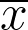

Search for videos and training materials about testing. You will often find recommendations to "use an online statistics calculator" for the right sample size or for finding out if the results from your test are statistically significant (rejects the null hypothesis). Still, they never say which one or how to find and compare them. I, as a Business Analytics Manager, have also made the same mistake with my team of Business Analysts. statistically significant (rejects the null hypothesis), but they never say which one or how to find and compare them. I, as a Business Analytics Manager, have also made the same mistake with my team of Business Analysts.
The problem is that there are a lot of online calculators to help people with testing. And each one has peculiarities about what kind of test they help you perform or what premises they use under the hood.
It's hard to pick the best one, given they are so prolific and differ in purpose, inputs, and outputs. None of the ones I found are wrong, even if they give out different results, it's just because they consider different premises. Nevertheless, it is noticeable that all of them were built with effort and care from the developers, who, no doubt, dedicated their time and energy to building something good and useful for others to enjoy. So, thank you, altruistic developers.
To help testers and my own Business Analyst team to navigate the abundant volume of online statistics calculators and build great tests, I put together this table below comparing the most popular (according to Google search) online calculators that have to do with testing, sample sizing, and statistical significance verification. I hope this helps you. Enjoy!
| Calculator | Supported types of test | Inputs (user can set) |
Premised (user cannot set) |
Output | ||||
|---|---|---|---|---|---|---|---|---|
| One sample proportion |
One sample mean |
Two samples proportion |
Two samples mean |
|||||
| samplesizecalculator.github.io | Yes | Yes | Yes | Yes | or (  and ), CL, CI, , tails according to the selected type of test | power but results for power=80% are shown in the details below the answer, pop ∞ | ||
| infrrr | infrrr.com | Yes | Yes | Yes | Yes | or ( and ), , CL, , tails | power, pop ∞ | hypothesis evaluation (says if it is statistically significant or not) with p-value |
| Statistics Kingdom | statskingdom.com/mean-tests.html | Yes | Yes | Yes | Yes | or ( and ), CL, CI, , tails, choose between Z-test (assumes normal distribution) or t-test (assumes student's t distribution) | pop ∞ | hypothesis evaluation (says if it is statistically significant or not) with p-value and power |
| abtestresult.com/test-analysis | No | No | Yes | Yes | and or ( , , and ), , CL, tails | power, pop ∞ | hypothesis evaluation (says if it is statistically significant or not) with p-value and cool charts | |
| abtestresult.com/sample-size-calculator | No | No | Yes | Yes | or ( and ), CL, power, MDE, tails | groups have the same size, pop ∞ | ||
| sample-size.net/confidence-interval-proportion | Yes | No | No | No | , CL, | power, two-tails | CI | |
| sample-size.net/sample-size-conf-interval-proportion | Yes | No | No | No | , CL, pop, MDE | power, two-tails | ||
| sample-size.net/confidence-interval-mean | No | Yes | No | No | , , CL, | power, two-tails | CI | |
| sample-size.net/proportions-effect-size | No | No | Yes | No | , CL, power, , , left or right tail | one-tail, pop ∞ | ||
| sample-size.net/sample-size-proportions | No | No | Yes | No | , , CL, power, | two-tails, pop ∞ | ||
| sample-size.net/means-effect-size | No | No | No | Yes | , CL, power, , | two-tails, pop ∞ | CI | |
| sample-size.net/sample-size-means | No | No | No | Yes | , CL, power, | two-tails, pop ∞ | ||
| 365datascience.com/calculators/confidence-interval-calculator | No | Yes | No | No | , , CL, | power, two-tails | CI | |
| 365datascience.com/calculators/hypothesis-test-calculator | No | Yes | No | No | , , , CL, , tails | power | hypothesis evaluation (says if it is statistically significant or not) with p-value | |
| 365datascience.com/calculators/difference-in-means-calculator | No | No | No | Yes | , , , , CL, , tails, choose between dependent and independent samples, choose between equal or unequal variances | power | hypothesis evaluation (says if it is statistically significant or not) with p-value | |
| bookingcom.github.io/powercalculator/ | No | No | Yes | Yes | or ( and ), CL, power, MDE (to output ), (to output MDE), tails | groups have the same size, pop ∞ | or MDE | |
| calculator.net/sample-size-calculator.html | Yes | No | No | No | , CL, pop, MDE (to output ), (to output MDE) | power, two-tails | or MDE | |
| calculator.net/confidence-interval-calculator.html | No | Yes | No | No | , , CL, | power, two-tails, pop ∞ | CI | |
| abtestguide.com/calc | No | No | Yes | No | , , , , CL, tails | pop ∞ | hypothesis evaluation (says if it is statistically significant or not) with p-value and power | |
| abtestguide.com/abtestsize | No | No | Yes | No | , CL, power MDE, tails | pop ∞ | ||
|
surveymonkey.com/mp/sample-size-calculator questionpro.com/sample-size-calculator qualtrics.com/blog/calculating-sample-size |
Yes | No | No | No | CL, pop, MDE | =50%, power, two-tails | ||
|
raosoft.com/samplesize.html select-statistics.co.uk/calculators/sample-size-calculator-population-proportion |
Yes | No | No | No | , CL, pop, MDE | power, two-tails | ||